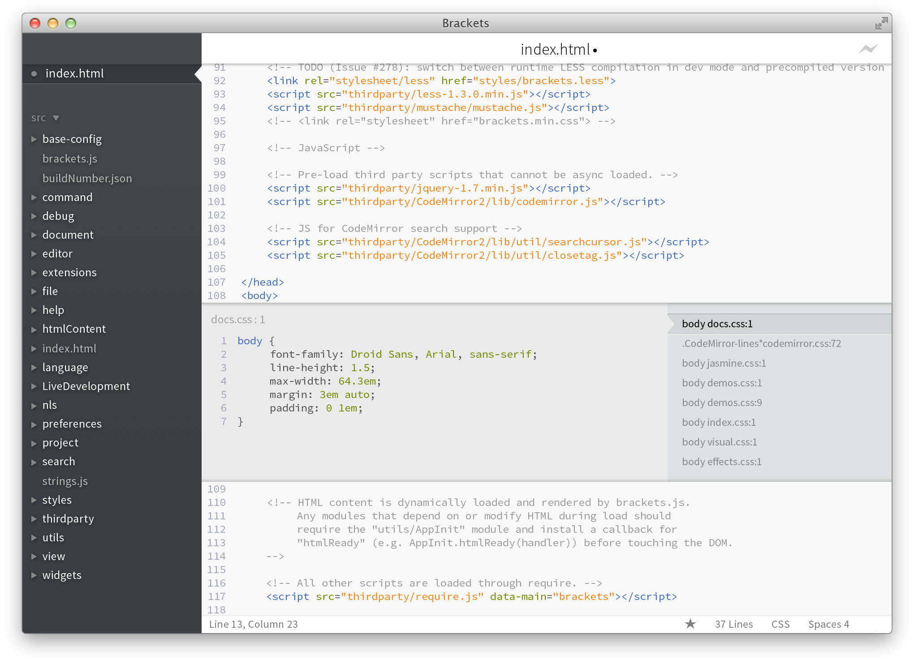

Welcome to a super early preview of Brackets, a new open-source editor for the next generation of the web. We’re big fans of standards and want to build better tooling for JavaScript, HTML and CSS and related open web technologies. This is our humble beginning.
You are looking at an early build of Brackets. In many ways, Brackets is a different type of editor. One notable difference is that this editor is written in JavaScript. So while Brackets might not be ready for your day-to-day use quite yet, we are using it every day to build Brackets.
When editing HTML, use the Cmd/Ctrl + E shortcut to open a quick inline editor that displays all the related CSS. Make a tweak to your CSS, hit ESC and you’re back to editing HTML. Or just leave the CSS rules open and they’ll become part of your HTML editor. If you hit ESC outside of a quick editor, they’ll all collapse. No more switching between documents and losing your context.
Want to see it in action? Place your cursor on the tag above and press Cmd/Ctrl + E. You should see a CSS quick editor appear above. On the right you will see a list of the CSS rules that are related to this tag. Simply scroll the rules with Alt + Up/Down to find the one you want to edit. You know that "save/reload dance" we've been doing for years? The one where you make changes in your editor, hit save, switch to the browser and then refresh to finally see the result? With Brackets, you don't have to do that dance.
Brackets will open a live connection to your local browser and push CSS updates as you type! You might already be doing something like this today with browser-based tools, but with Brackets there is no need to copy and paste the final CSS back into the editor. Your code runs in the browser, but lives in your editor!
If you have Google Chrome installed, you can try this out yourself. Click on the lightning bolt icon in the top right or hit Cmd/Ctrl + Alt + P. When Live Preview is enabled on an HTML document, all linked CSS documents can be edited in real-time. The icon will change from gray to gold when Brackets establishes a connection to your browser. Now, place your cursor on the tag above and use Cmd/Ctrl + E to open up the defined CSS rules. Try changing the size of the border from 1px to 10px or change the background color from "dimgray" to "hotpink". If you have Brackets and your browser running side-by-side, you will see your changes instantly reflected in your browser. Cool, right?Today, Brackets only supports Live Preview for CSS. We are currently working on Live Preview support for HTML and JavaScript. In the current version, you won't see changes to your HTML file until you save the document. Live previews are only possible with Google Chrome. We want to bring this functionality to all major browsers, and we're looking forward to working with those vendors.
Brackets is an open-source project. Web developers from around the world are contributing to build a better code editor. Let us know what you think, share your ideas or contribute directly to the project.